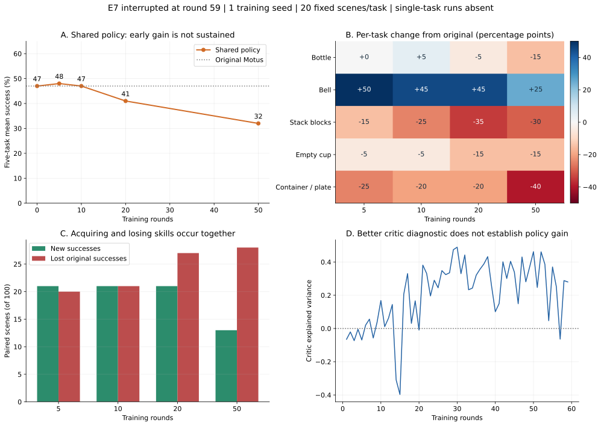

核查时间：2026-11-07T09:08:33+08:00（北京时间）。从逐场景原始记录重新统计。
共享策略完成59/100轮，完整保存并评估了第5、10、20、50轮。五个单任务策略均未开始，第100轮没有成绩。训练日志记录Ray主机内存压力杀掉3个工作进程，之后通信断开，约30分钟无进展后看门狗停止队列。
第50轮是最后一个完整评估检查点，不能称为100轮最终成绩。中断前成功率已随训练下降，不能把这一退化归因于中断。
原始模型为已经多任务SFT的Motus π0.5。当前设置为Flow-SDE＋PPO、严格FP32、每批1遍更新、冻结VLM、无critic预热。所有列均使用同一组每任务20个冻结Clean场景。
| 任务 | 原始 | 第5轮 | 第10轮 | 第20轮 | 第50轮 | 第50轮变化 |
|---|---|---|---|---|---|---|
| 调整瓶子 | 45% | 45% | 50% | 40% | 30% | -15个百分点 |
| 按铃 | 40% | 90% | 85% | 85% | 65% | +25个百分点 |
| 叠两块积木 | 35% | 20% | 10% | 0% | 5% | -30个百分点 |
| 放空杯 | 45% | 40% | 40% | 30% | 30% | -15个百分点 |
| 容器放盘 | 70% | 45% | 50% | 50% | 30% | -40个百分点 |
| 五任务均值 | 47% | 48% | 47% | 41% | 32% | −15个百分点 |
每个任务一次成功相差5个百分点。五任务各20场景，宏平均与合计成功数/100相同。400条检查点评估复用了100个场景，不是400个独立场景。

第5轮按铃从40%升至90%，贡献+10次成功；其余四个任务合计少9次成功，因此均值只从47%变为48%。这不能称为五个技能共同改善。
| 检查点 | 原来失败、现在成功 | 原来成功、现在失败 | 净变化 |
|---|---|---|---|
| 第5轮 | 21 | 20 | +1 |
| 第10轮 | 21 | 21 | +0 |
| 第20轮 | 21 | 27 | -6 |
| 第50轮 | 13 | 28 | -15 |
第50轮丢失了原始47次成功中的28次，只保留19次；另外获得13次新成功，合计32次。叠块在第20轮为0/20；容器放盘从70%降到30%。当前值得研究的问题是如何获得新收益，同时保住原来能完成的技能。
| 训练轮次 | critic解释方差均值 | 负解释方差轮数 | 价值损失均值 |
|---|---|---|---|
| 1—10 | -0.001 | 6/10 | 0.0415 |
| 11—20 | 0.023 | 3/10 | 0.0123 |
| 21—50 | 0.327 | 0/30 | 0.0075 |
| 51—59 | 0.252 | 1/9 | 0.0076 |
59个训练批次的更新前概率一致性审计全部通过，最大误差0.000102，低于0.01。该检查排除了已检测到的概率重算偏差，不能证明整个算法实现或更新方向均正确。
第21—50轮critic解释方差全部为正，均值0.327；这一时期开发场景均值仍从41%降到32%。解释方差改善与任务表现下降同时存在。因此，“再训练更久让critic稳定就会涨分”没有得到本轮支持。价值统计基于持续变化的训练分布，也不能直接等同于独立评估上的价值质量。
下一步应区分通用的策略漂移、训练／评估分布差异、奖励与任务成功的关系，以及多任务共享更新的影响。梯度冲突和critic因果作用都还没有直接证据。
已完成59轮、295次优化器更新；采集302,080个名义动作点，实际执行291,655个。每任务名义交互量相同，均为60,416；第50轮用于对比的预算为每任务51,200。
日志中的内存终止阈值为125.41 GiB限额的95%；实际用量128,091,848,704字节越过127,928,451,072字节阈值。并发评估进程约14.24 GiB，383个空闲Ray工作进程的USS约6.82 GiB；这些是占用来源线索，尚不能独立确定哪项贡献了峰值。
原调度只对GPU显存设置余量，没有同步约束主机／容器内存。恢复前需要补齐内存监控、限制空闲工作进程，并在Ray致命错误后及时终止等待。不要通过关闭OOM保护掩盖问题。
最新完整检查点为第50轮；第51—59轮更新没有完整保存。如果后续从50轮恢复，环境与随机数连续性不能默认成立，重复采样和恢复成本要另记。
暂不把任务数扩到10—50，也不只挑第5轮作为最终成绩。1个训练种子、20个重复使用的开发场景用于定位问题；论文阶段需要独立场景与多个种子确认。
E4短预算RECAP：ST和MT均29/100，没有总体MT低于ST的证据。E5旧PPO：瓶子单任务也出现明显退化。E6稳定配置：瓶子在第5轮11/20，第10轮回到9/20。本轮E7补充的是共享策略的长期技能保持诊断，尚未完成ST／MT比较。不同配置和预算的实验不能拼成受控排名。
完整分析与证据哈希 · 逐任务结果CSV · 400条配对场景CSV · 完整曲线 · 实验总览 · 中断记录 · 冻结计划